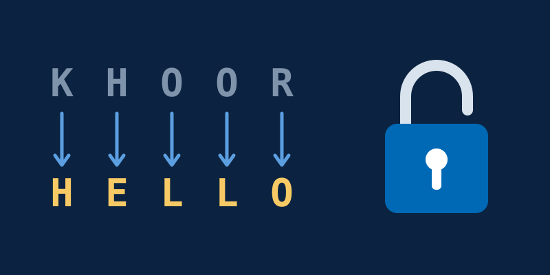
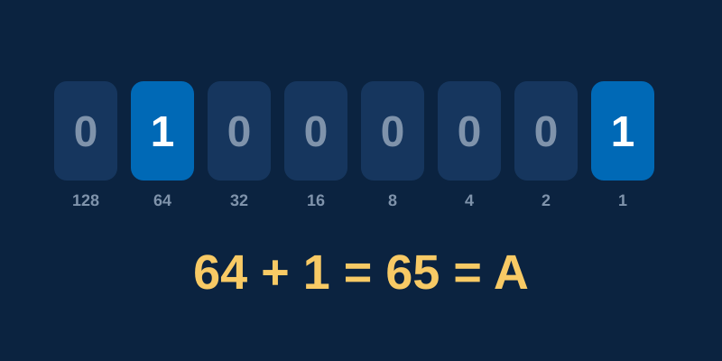

Programming
Robot Path Puzzles
Nine levels, from a simple corridor to a full spiral. Can you earn three stars on every one?
Challenges
Think the quick puzzles were easy? These go further. Every challenge is a real idea from computing, and every one shows you where you would master it at BYU-Idaho.
Programming
Nine levels, from a simple corridor to a full spiral. Can you earn three stars on every one?

Hardware
Pick AND, OR, and NOT gates to light the lamp, then build a circuit that adds two numbers.

Security
Crack secret messages, then think like a defender and spot the weakest password.

How Computers Think
Flip eight switches to make numbers and letters, and see how computers store everything.
Like Solving These?
If you enjoyed figuring these out, you will love what comes next. Find the major that fits you.